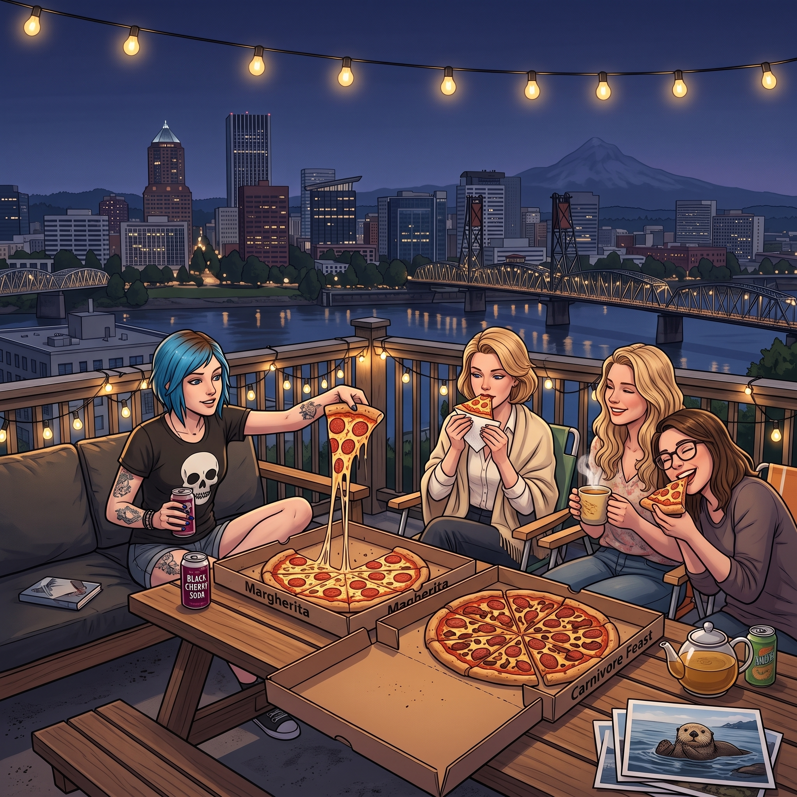

天台披薩夜

夜幕低垂，波特蘭微涼的夜風吹散了白天的最後一絲暖意。
天台欄杆上纏繞著的太陽能小串燈「啪嗒」一聲自動亮起，散發出柔和溫暖的暖黃色微光。木質長桌中央擺著兩個打開的巨大瓦楞紙盒——那是剛從珍珠區街角老店送上來的特大號柴火窯烤披薩，一盒是鋪滿水牛芝士、九層塔與帕爾瑪火腿的經典瑪格麗特，另一盒則是堆滿了墨西哥醃辣椒、煙燻牛肉與雙倍芝士的重口味肉食狂歡。
「開動！」Chloe 盤腿坐在最厚的一塊戶外防水軟墊上，毫不客氣地伸手扯下一大塊熱氣騰騰、拉著長長芝士絲的辣牛肉披薩，另一手拉開一罐冰鎮黑櫻桃汽水，大口灌了下去，「讚透了。在車間裡對著一台 90 年代老富豪的變速箱折騰了整整四個小時，老娘的胃剛才都在抗議要罷工了。」
「文明一點，Price，油漬要滴到地墊上了。」Victoria 坐在折疊帆布椅裡，身上披著一條米白色的羊絨披肩。她用紙巾極其講究地墊著一角瑪格麗特披薩，優雅地咬了一小口，隨後將目光投向旁邊的 Kate，「不過說真的，Marsh，妳那間兒童發展諮詢中心的實習聽起來比修車有意義得多，上週那個拒絕開口說話的小女孩情況有好轉嗎？」
Kate 捧著一杯冒著熱氣的洋甘菊茶，眼角彎成溫柔的月牙：「有的！週三的時候，我帶了 Max 幫我洗印的那組俄勒岡海岸海獺照片過去。她盯著照片看了很久，最後指著海獺小聲跟我說了一句『它在笑』。督導老師說這是一個很大的突破，下週我可以嘗試讓她自己用蠟筆畫小動物了。」
「哇哦，Kate，妳簡直是天使降臨人間的常駐代表。」Max 咬著披薩邊緣，笑著把頭靠在 Kate 的肩膀上，眼鏡片在小串燈的光暈下泛著暖光，「我這邊就沒那麼平靜了——當代攝影導師今天給我們佈置了一個叫『城市裂痕與重構』的期中大作業，要求我們去廢棄工業區找膠卷素材。全班都在抱怨，只有我暗自慶幸……畢竟在阿卡迪亞灣的廢品場，我早就把這種美學拍過幾千遍了。」
「哈哈！妳該把老娘在廢品場頂著鹿角假裝搖滾巨星的照片直接交上去，」Chloe 大笑著拍著大腿，嚼著醃辣椒，「保證那個留著山羊鬍的文藝老頭直接給妳打個 A+，然後請妳去給他的先鋒雜誌拍封面！」
「要是那樣的話，波特蘭當代藝術界大概會以為我們藝術學院招了一群精神病患者。」Victoria 輕輕挑起眉毛，端起高腳杯抿了一口黑皮諾紅酒，嘴角卻帶著一絲隱秘的弧度，「順便說一句，下個月底我參與策劃的青年獨立藝術家聯展，主展廳入口處最顯眼的那個獨立展位，我已經用策展人特權給妳預留下來了，考菲爾德。」
Max 愣了一下，手裡的披薩差點掉在盤子裡：「等等……Victoria，妳是說西雅圖那間著名的當代畫廊巡迴展？真的假的？！」
「本名媛從不開空頭支票。」Victoria 下巴微揚，眼神裡透著名媛特有的傲然與認可，「作品集選片由我和妳共同把關。記住，不准挑妳那些糊成一團的抓拍，我要的是有張力、有故事的黑白大畫幅——別給 Chase 家族的眼光丟臉。」
Chloe 一聽這話,眼睛瞬間亮起,二話不說扔下手裡的披薩,張開雙臂就朝 Victoria 撲了過去。
「蔡斯！」她的聲音裡帶著毫不掩飾的興奮，「妳這是要把 Maxine 送上人生巔峰啊！老娘代表她給妳一個超級無敵大熊抱！」
「等等——」Victoria 眼疾手快地側身一閃，端著紅酒杯的手臂靈活地往後撤了半步，堪堪躲過那個朝她撲來的擁抱，語氣裡帶著一絲不容商量的嚴肅，「Price，我們現在是正式的商業合作關係，展位資源牽涉到雙方的專業信譽，不興妳這套廉價的肢體感謝。」
Chloe 撲了個空，愣了一下，隨即挑眉：「什麼商業合作，妳這不就是心疼 Maxine 想幫她一把嗎？」
「而且，」Victoria 完全無視她的吐槽，端著酒杯又往旁邊挪了小半步，語氣裡帶著一絲不自在，「妳這張臉，靠得太近了。」
「靠，妳這也太見外了吧！」Chloe 悻悻然地收回手臂，一屁股重新坐回軟墊上，「早知道就不謝妳了，冷血動物。」
「謝不謝隨妳，」Victoria 姿態依舊優雅地啜了口紅酒，眼底卻藏著一絲不易察覺的笑意，「但下次想表達感激，麻煩用言語，或者……幫我把妳那輛破皮卡的擋風玻璃修一修，看著鬧心。」
一旁的 Kate 忍俊不禁，Max 也被逗得笑出聲來，伸手輕輕拍了拍 Chloe 的肩膀：「算了吧，冠軍，她這是她自己的表達方式。」
「這才是我的好蔡斯！」Chloe 吹了聲響亮的口哨，舉起手裡的汽水罐，「來吧，各位！為了波特蘭最硬核的機械師、最溫柔的心理學家、未來的大攝影師，以及我們刀子嘴豆腐心的億萬富翁策展人——乾杯！」
四個裝著不同飲品的杯子在長桌中央「叮」的一聲碰在一起，清脆的聲響在安靜的夜空中格外悅耳。
遠處威拉米特河上的鐵橋亮起了橙紅色的燈帶，波特蘭市區的天際線在深藍色的夜空下靜靜延展，微風吹過天台上的薄荷與番茄藤，帶來泥土與植物的清香。
沒有時鐘的倒數，也沒有命運的陰霾。在這個只屬於她們四人的天台上，笑聲與披薩的熱氣在微涼的夜風中交織，將每一張年輕而鮮活的臉龐，都映照得無比明亮。